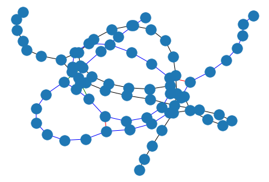
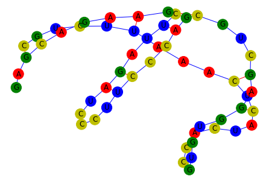

Graphein RNA Graph Construction Tutorial#
In this notebook we construct graphs of RNA secondary structures.
The inputs we require are a sequence (optional) and a dotbracket specification of the secondary structure.
The workflow we follow is similar to the other data modalities. The desired edge constructions are passed as a list of functions to the construction function.


[1]:
# Install Graphein if necessary
# !pip install graphein
[2]:
import logging
logging.getLogger("matplotlib").setLevel(logging.WARNING)
logging.getLogger("graphein").setLevel(logging.WARNING)
from typing import List, Callable
import networkx as nx
from graphein.rna.graphs import construct_rna_graph
from graphein.rna.edges import (
add_all_dotbracket_edges,
add_pseudoknots,
add_phosphodiester_bonds,
add_base_pairing_interactions
)
To use the Graphein submodule graphein.protein.visualisation, you need to install pytorch3d.
To do so, use the following command:
conda install -c pytorch3d pytorch3d
Construction with a Dotbracket#
Graph construction is handled by the `construct_rna_graph() <https://graphein.ai/modules/graphein.rna.html#graphein.rna.graphs.construct_rna_graph>`__ function.
[3]:
from graphein.rna.visualisation import plot_rna_graph
edge_funcs_1: List[Callable] = [
add_base_pairing_interactions,
add_phosphodiester_bonds,
add_pseudoknots,
]
edge_funcs_2: List[Callable] = [add_all_dotbracket_edges]
g = construct_rna_graph(
"......((((((......[[[))))))......]]]....",
sequence=None,
edge_construction_funcs=edge_funcs_1,
)
nx.draw(g)
plot_rna_graph(g, layout=nx.layout.spring_layout)
WARNING:graphein.rna.visualisation:No sequence data found in graph. Skipping base type labelling.

Construction with a dotbracket and sequence#
[4]:
g = construct_rna_graph(
sequence="CGUCUUAAACUCAUCACCGUGUGGAGCUGCGACCCUUCCCUAGAUUCGAAGACGAG",
dotbracket="((((((...(((..(((...))))))...(((..((.....))..)))))))))..",
edge_construction_funcs=edge_funcs_1,
)
plot_rna_graph(g, layout=nx.layout.spring_layout)

[5]:
g = construct_rna_graph(
sequence="CGUCUUAAACUCAUCACCGUGUGGAGCUGCGACCCUUCCCUAGAUUCGAAGACGAG",
dotbracket="((((((...(((..(((...))))))...(((..((.....))..)))))))))..",
edge_construction_funcs=edge_funcs_1,
)
plot_rna_graph(g, layout=nx.layout.circular_layout)